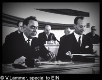
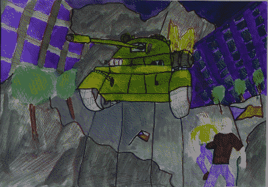

1961-1970.html
Russia: 1961-1970

The above picture depicts Brezhnev and Dubchek, the former leaders of the Soviet Union and Czechoslovakia, respectively.
Dubchek initiate a series of reforms to the political system in the beginning of the 1960's in Czechoslovakia which became known as the Prague Spring. Editors were given more freedom of the press and the public was given a limited role in the political process, among other thing. For an overview of what constituted the Prague Spring, click here.
These reforms made the Soviet Union very nervous, as they feared the weakening of the Communist Party in Czechoslovakia would lead to reforms in other countries and a general disintegration of the system they had built. In fact, Dubchek was not interested in overthrowing communism, but his motto was "socialism with a human face".

The Soviets and other members of the Warsaw Pact invaded Czechoslovakia in August of 1968. For a chronology of events leading to the invasion, click here. Several days leader, the president of Czechoslovakia flew to Moscow and signed an agreement that made many concessions. Many liberal leaders were forced to resign and the party strenghtened its hold on the country.
To learn about the impressions of the Western press of the invasion, click here. To learn about the meaning of the invasion today in the Czech Republic, click here.